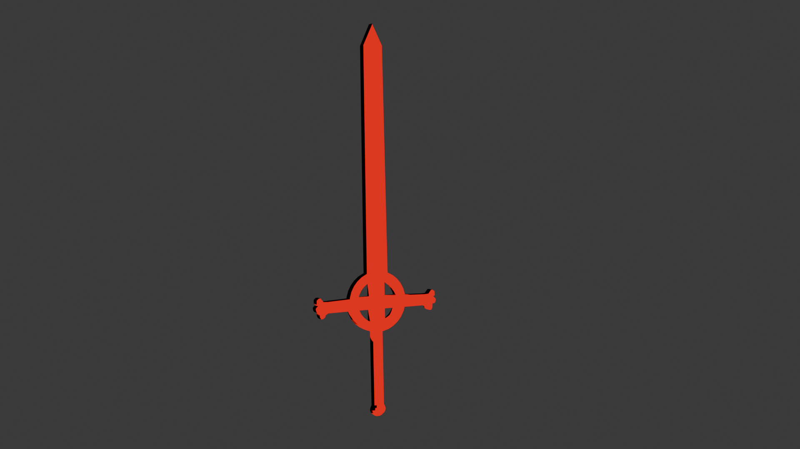
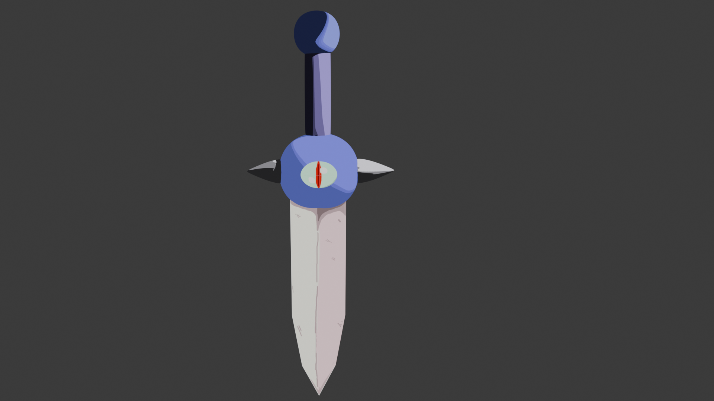
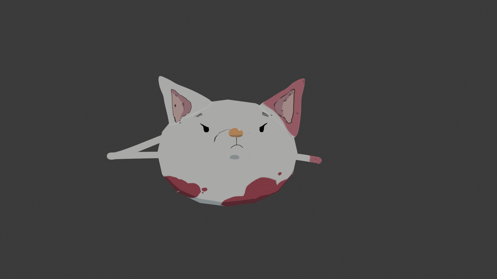
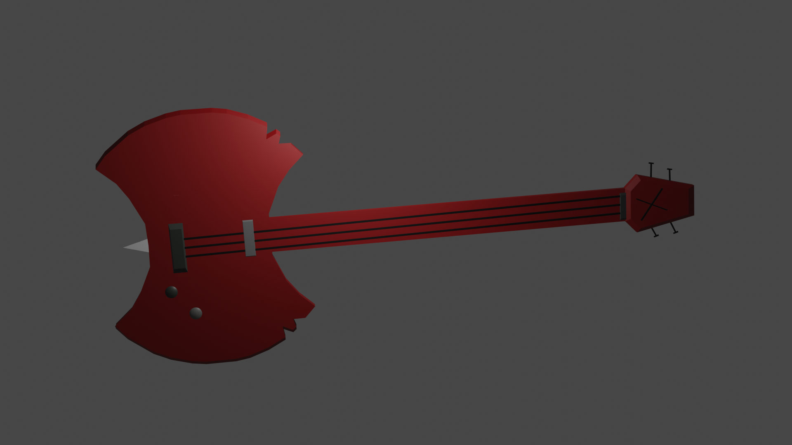

1:VOID
2:SYSTEM
3:DEV
9:HELL
WM: Hyprland
[ROBLOX_CORE]
NET: UP
BAT: 13% (Draining)
17:01
urxvt - neofetch
archlinux@V0ID
OS:
Arch Linux x86_64
WM:
Hyprland
Theme:
????
Terminal:
Alacritty
Skillset:
Blender 3D, Substance Painter, Roblox Studio,UI DESIGNER,C++ and LUA "for roblox"
Status:
WORKINGG!!!!!
/* Creating UGC items from the depths of the Upside Down */
buy me a coffee? or check my roblox profile for my work!
sys_monitor :: MENTALITY_RED
NSSDC DATA_CENTER
SCANNING_CORRUPTION... 99%

ID: 666-A
OBJ: Blood Sword from Adventure Time
Cartoon Style
!!!

ID: 666-B
OBJ: Cursed Knife from Adventure Time
Cartoon Style
!!!

ID: 666-C
OBJ: Kat from Seven Deadly Sins
RIG: CUSTOM With Anim

ID: 666-D
OBJ: Marceline Guitar From Adventure Time
RIG: CUSTOM
render_engine_preview.exe
Void guy :p
Dark Matter Shaders Active
dead_links.txt
ROBLOX PROFILE ->
In comming ->
In comming ->